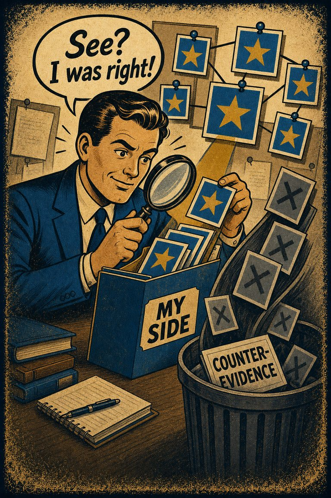
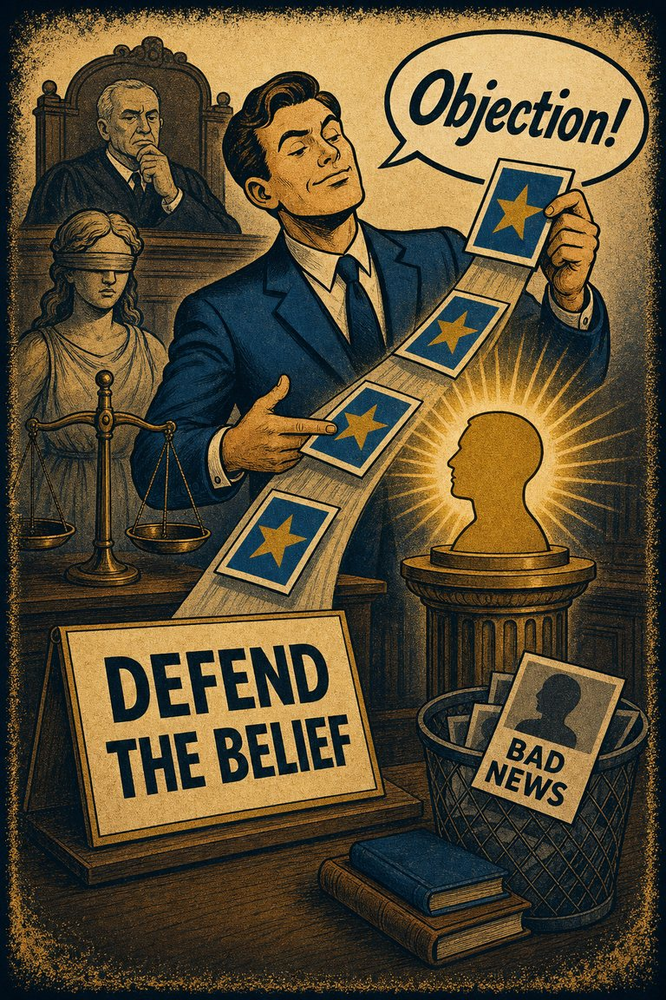

Confirmation bias
Core pattern
The search, recall, or weighting process favors information that supports the existing belief.
Ask: What disconfirming search path has been avoided or underweighted?

Cognitive Biases
A practical cognitive-bias site with clear definitions, learning paths, assessments, self-audits, and debiasing tools.
Compare Biases
Both protect a favored conclusion, but confirmation bias narrows the search and motivated reasoning bends the whole evaluation around what the person wants to be true.
Confirmation bias
The search, recall, or weighting process favors information that supports the existing belief.
Ask: What disconfirming search path has been avoided or underweighted?
Motivated reasoning
The conclusion is defended because it serves identity, comfort, status, group belonging, or some other motive.
Ask: What would become costly, embarrassing, or identity-threatening if the conclusion changed?
The same case often has both: people search selectively because a preferred answer is emotionally or socially useful.
Ask whether the main failure is selective evidence intake or desire-driven evaluation after evidence arrives.
Use these before deciding which label should carry the lesson.
Would the same search pattern appear if the preferred answer had no personal or group value?
Is contrary evidence missing, or is it present but being explained away asymmetrically?
What neutral test would both sides accept before seeing the result?
The same surface area can point to different underlying mechanisms.
A manager reads only articles supporting a policy she already prefers.
Why: The visible failure is selective evidence gathering.
A fan accepts weak evidence for their team and invents elaborate reasons to reject stronger evidence against it.
Why: The evaluation standards shift to protect an identity-linked conclusion.
Repair Move
Require one serious disconfirming search path, then state in advance what evidence would change the conclusion.
Use the comparison as a bridge into the fuller pages.

The tendency to notice, seek, and remember evidence that supports the story you already prefer more readily than evidence that threatens it.

The tendency to use reasoning as a defense lawyer for desired conclusions rather than as an impartial search for what is most likely true.